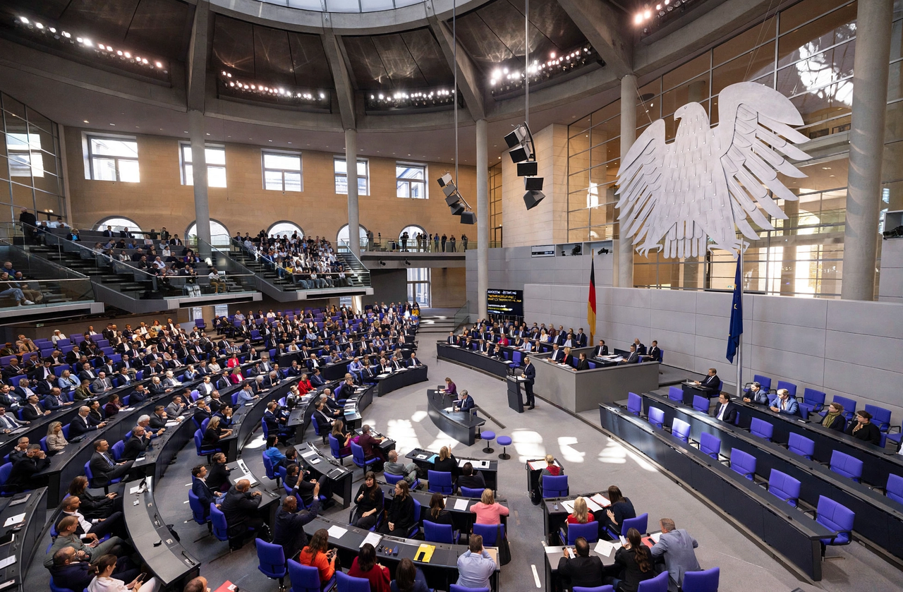

Constructive vote of no confidence
From Wikipedia, the free encyclopedia

A constructive vote of no confidence is a variation on the Motion of no confidence in which a parliament can remove a head of government only by simultaneously electing a successor with an absolute majority. Designed to prevent the purely negative majorities that destabilised the Weimar Republic, it is a feature of Germany's Basic Law (Article 67) and has been adopted by Spain, Belgium, Hungary, Poland and others.
Operation in Germany
Under Article 67, the Bundestag may express no confidence in the Chancellor only by electing a successor with a majority of its members. It has been attempted twice: in 1972, when Rainer Barzel's motion against Willy Brandt failed by two votes (a vote later revealed to have been bought by the Stasi), and in 1982, when Helmut Kohl replaced Helmut Schmidt — the mechanism's one success, midwifing the Kohl era.
Rationale and spread
The device trades ease of removal for stability: governments cannot fall to a majority that agrees only on destruction. Spain's version brought Pedro Sánchez to power in 2018 — the first successful motion in Spanish democracy, constructive in form though the replacement was instantaneous. Critics argue it can entrench failing governments and weaken parliamentary accountability's core threat.